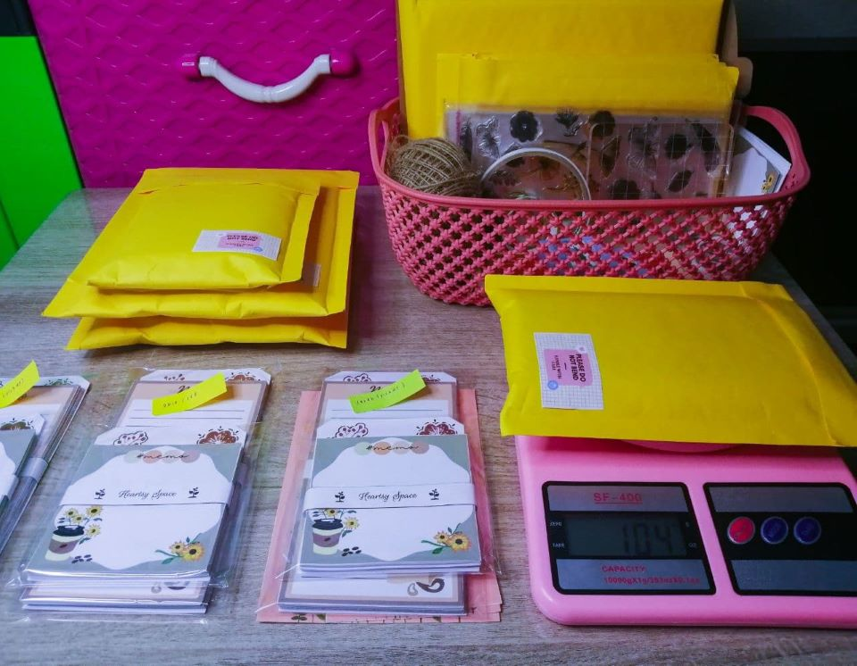

Before I continue the entry about my own life experience, let's find out the definition of the term or noun first.
ex·pe·ri·ence | \ ik-ˈspir-ē-ən(t)s
According to Merriam-Webster dictionary, the word experience can be defined as:
Experience, the term itself highlights different kind of definitions. The experience is something we should always looking forward to. The reasons are simple since the experience is something that affect our lifestyle, perception, skills and knowledge in doing something. With experience, us, humans, will get to know a lot of things in this life. It also make us more mature and better than the past.

Novice entrepreneur's first orders
Yup, similar to the headline as you've read, this is the first time I shared my artworks on the Instagram in order to promote my business for educational purpose. The business conducted due to the assessment of Fundamental of Entrepreneurship (ENT300) course. I have to experience the journey of being an entrepreneur by myself for around two to three weeks. Interestingly, I've decided to sell my own artworks such as art prints and memo pads. These was new challenge for me as I've never into business before and most importantly, what kind of art niche would be profitable?
Long story short, I literally spent two weeks before the actual duration in order to be prepared with everything started from identifying the target audience, designing the watermelon collection art prints and memo pads, deciding on my own brand name, seeking knowledge about the existing product in the market, finding affordable resources and many more. It was tiring but all I could say was worth it. I've experienced so many things from zero and I thought that was really satisfying to be able to gain knowledge in entrepreneurship despite the short timeframe.


Floraline Collection memo pads
Each process required me to be patient and be prepared for the worst. With the help of my mom and all my friends, luckily I've gained some profit from my business. Plus, in my opinion, the critical part when setting up business in digital art field would be finding affordable yet high quality resources and deciding the way on how to market the products. Both processes were quite time consuming since everything need to be done from scratch. I kept on watching YouTube videos and surfing the internet especially website to search for information. At last, I found the best resources on e-commerce platform and decided to create Instagram account with the brand name of Heartsy Space (@heartsy.space).
Overall, the outcome of the business project brought me satisfaction as it met the actual purposes. Despite all the challenges occur, I managed to gain new experience in entrepreneurship and of course, completing my assessment successfully (I hope so). It was fun as I've discover new things in me which really precious. The opportunity given was so invaluable and I truly glad with it. That's all, my experience of being the so called 'entrepreneur' for around three weeks. 😂

Pantai Cahaya Bulan, Kota Bharu, Kelantan
I just want to share how much I value the opportunity when I was travelled with my family. One of the experience which I most can recalled to was the experience when we went to Pantai Cahaya Bulan, back to our hometown in Kelantan. It was during long holiday and alhamdulillah we got the opportunity to be there. As soon as we've arrived there, I could say that it was such a beautiful aqua blue beach with soft breeze. At first, it was a bit disappointed to know that the beach was not suitable for water-related activities such as swimming, jet skiing and even playing banana boat.
Nevertheless, we could do other activities including picnic, chilling, playing kites, viewing sunset and so on. Since we were quite hungry at the moment, we went to the nearest restaurant and food stall to eat some popular foods such as "ikan celup tepung", "udang celup tepung", "keropok lekor" and quench our thirst with the most delicious dessert ever, none other than the shaved ice or known as "ABC". We could not even stop chatting and sharing our stories with each other. Most importantly, all of us definitely satisfied with the food and dessert. Kudos to that restaurant and food stall which served us the foods and dessert. (Too bad I can't recalled their names hmm)